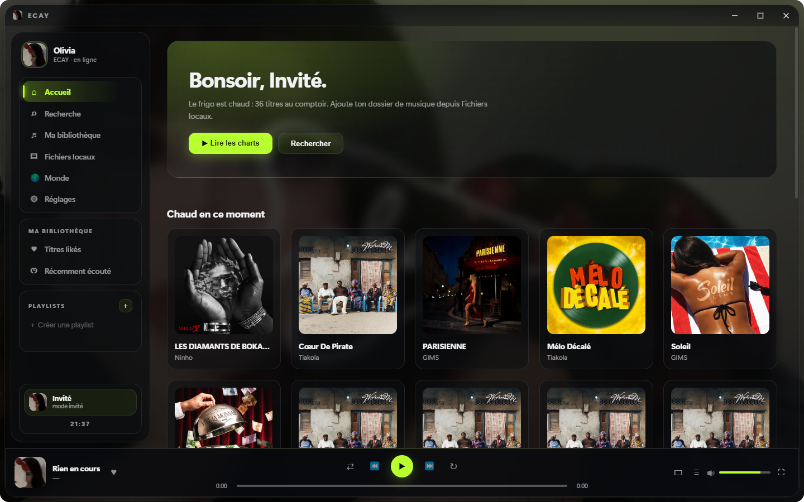

Le lecteur qui
écoute aussi tes oreilles
ECAY joue ta musique, la transforme en direct et te laisse en disposer : effets sonores, minuteur de sommeil, connexion Discord et espace créateurs — le tout sur ta machine.

Ce que fait ECAY
Chaque fonction s’applique pendant que la musique joue : on bouge un curseur, le son change sur-le-champ.
Effets sonores
Slow mode, nightcore, 808, radio, téléphone, écho, réverbération. La voix suit la vitesse, comme sur une platine.
Minuteur de sommeil
De 15 minutes à 1 h 30, ou à la fin du morceau — jamais une phrase coupée en plein milieu.
Connexion Discord
Ta bannière et ton avatar Discord affichés dans l’application après autorisation.
Studio créateur
Crée un compte créateur : nom, photo, bannière, présentation. Publications, likes, réponses et abonnements.
Rechercher et suivre
Cherche un créateur par nom ou par présentation, ouvre son profil, suis-le. Ses publications remontent en tête de l’actualité.
Salon PourEcay
La salle des idées. Ce que tu veux voir dans ECAY, tu le déposes là : chaque proposition garde son fil à part, sans polluer l’actualité.
Tableau de bord
Tes vues sur la journée, la semaine et le tout, en classement. Questions, sons publiés, créateurs à découvrir.
ECAY Équipe
La fiche du fondateur, en relief 3D : la carte s’incline au passage de la souris, les badges bougent tout seuls.
File réordonnable
Déplace les morceaux à la main dans la file d’attente. L’écoute en cours suit le titre, pas sa position.
Basse et ampli
Un bouton pour pousser les graves, un autre pour l’égaliseur. Effet immédiat, sans réglage à comprendre.
Mise à jour automatique
ECAY vérifie la nouvelle version au démarrage et te propose l’installation. Tu n’as rien à chercher.
L’équipe
ECAY est écrit, dessiné et publié par une seule personne.


Installer ECAY
Télécharge l’installateur, lance-le, c’est terminé. Aucun compte, aucune publicité, aucun envoi de données.
⬇ ECAY-Setup-1.9.7.exeWindows 10 et 11 · 64 bits · taille affichée par ton navigateur au téléchargement
La dernière version, en chiffres
Ces compteurs viennent de la page Releases de GitHub — relevés à chaque ouverture de cette page.
Ce site est une page statique hébergée sur GitHub Pages : elle ne compte pas les visiteurs et ne conserve aucun identifiant. Les téléchargements affichés proviennent du dépôt public, où l’application est distribuée.